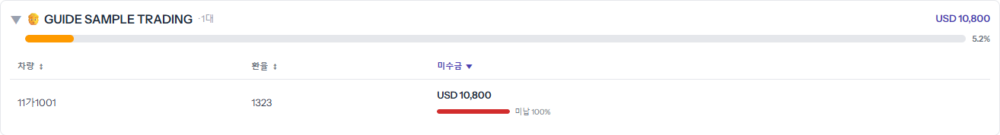
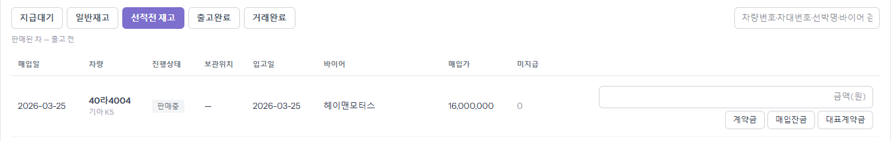
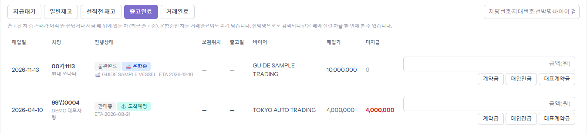
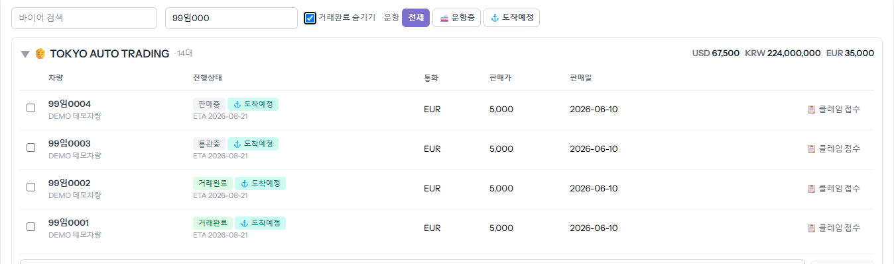

왼쪽 메뉴 「내 정산·미수(포털)」은 ERP 에 있는 내 차·내 바이어·내 돈을 board 에서 보는 화면입니다. 숫자는 전부 ERP 원장 그대로이고, 여기서 고칠 수는 없습니다(고칠 것은 ERP 담당에게). 화면을 연 뒤 ERP 에서 바뀐 것은 오른쪽 위 [↻ 갱신]을 눌러야 보입니다.
바이어 줄 오른쪽 금액은 그 바이어가 덜 낸 돈을 바이어 통화로 합친 것이고, 주황 막대는 내 전체 미수 가운데 그 바이어가 차지하는 비중입니다. 줄을 누르면 차마다 환율·미수금과 「미납 N%」 막대가 나옵니다. 다 낸 바이어는 「완납(0원) 숨기기」에 가려져 있습니다.

칸 이름 아래 회색 글씨가 그 칸의 뜻입니다. 오른쪽 검색칸은 차량번호·차대번호·선박명·바이어 등으로 찾습니다.

진행상태(판매중·통관완료 등)와 따로 붙는 칩입니다. 「운항중」은 배가 떠 있는 것, 「도착예정」은 도착 예정일(ETA)이 지난 것입니다 — 실제로 입항했다는 확인은 아닙니다. 칩 아래에 선박명과 ETA 가 나옵니다. 선박명으로 검색하면 같은 배에 실린 차를 한 번에 봅니다.

왼쪽 칸은 바이어 이름, 가운데 칸은 차량번호·차대번호로 찾습니다. 「운항」 [🚢 운항중]·[⚓ 도착예정]을 누르면 그 차만 남습니다. 바이어 줄을 누르면 차마다 진행상태·통화·판매가·판매일이 나오고, 여기서 판매대금확인·클레임 접수를 보냅니다(각 가이드).
